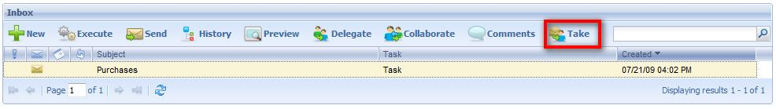
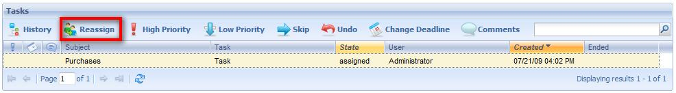
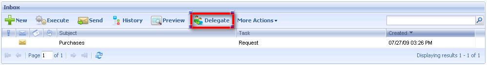

Execute procedures when an event occurs. Description
The event occurs when the assignment of a task instance changes. The change in the assignment could be:
 Using workflow data types would be: &workitem.Assign(user)
 Using workflow data types would be: &workitem.Reassign(sourceUser, targetUser)
 Using workflow data types would be: Delegate (user) The procedures have the following parameters rule: parm(in:&wfevent); where: See Also
|
| Backlinks | ||
| BPD Subprocesses Embedded Properties | BPD Subprocesses Reusable Properties | None Task Properties |
| Reusable Properties | Script Task Properties | User Task Properties |